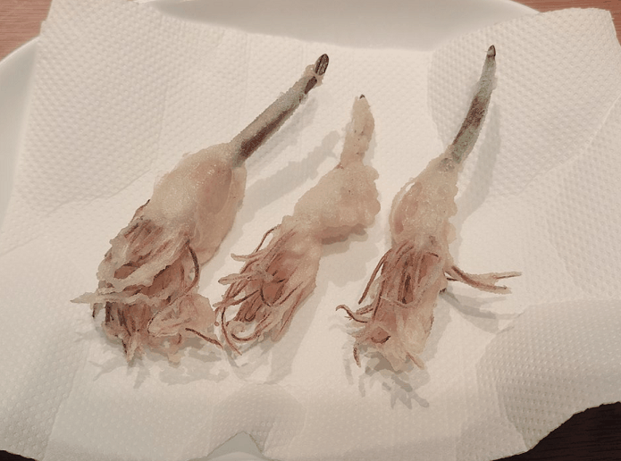
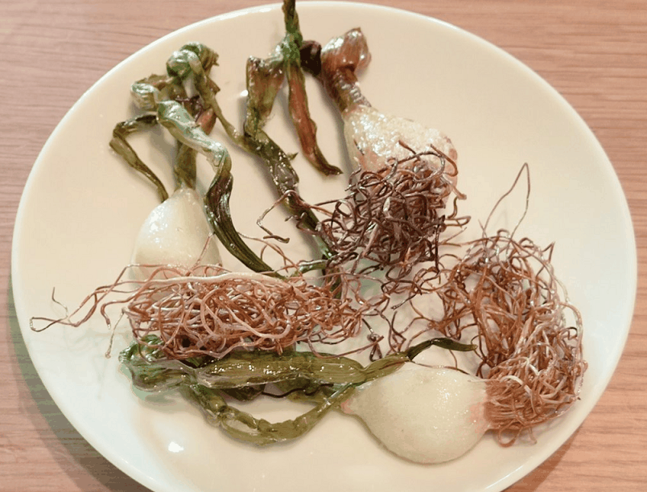

にんにくスプラウトの育て方
本記事では、にんにくスプラウトを水耕栽培で育てる方法を紹介しています。

にんにくスプラウトは、にんにくを発芽させ、芽の長さをだいたい5cm～15cm程度に伸ばしたものです。
にんにくの成分が濃縮され、栄養価が高まるとされています。
また、にんにく独特のにおいが軽減され、食べやすくなります。
↓栄養素のグラフ（https://niitaka-farm.stores.jp/から引用）
実は、このにんにくスプラウトは、市販のにんにくから簡単に育てることができます。
必要なものは容器と水だけです。
手軽に植物育成を体験できますので、是非トライしてみてください。
0. 用意するもの
- にんにく
- 容器（スタバカップ）

以上です。簡単そうに見えますね！
1. 発根させる
にんにくを剥いてスタバカップに入れます。
にんにくの下が少し浸かるくらいの水を入れます。
すると、1日～2日くらいで根っこが生えてきます。

2. スタバカップのふた側ににんにくをのせる
スタバカップのふたの穴をカッターで少し広げます。
そこに、にんにくの根っこを通して、下のようにはめ込みます。
カップに水を入れて根がつかるようにしておけば完成です。

3. 成長を見守る
あとは勝手に育ちます。
水は2-3日ごとに交換すればOKです。
（冬なら1週間くらい放置しても大丈夫でした）

4. 収穫する
10-15cmくらいまで育ったら収穫します。
素揚げ、天ぷら、ホイル焼き、お好きなものをどうぞ～。全部おいしいです！
年越しそば用に、ニンニクスプラウトを天麩羅に。
— YU＠水耕栽培やってます (@UrbanVegeOasis) December 31, 2023
おいしすぎる・・！！ pic.twitter.com/YERiSkuZFe
にんにくスプラウト素揚げしてみた。にんにく臭さが少し減って、根っこはカリカリで実はホクホクしてて美味しいかも！
— YU＠水耕栽培やってます (@UrbanVegeOasis) December 24, 2023
またやろ〜かな😃 pic.twitter.com/fclggvoFPi
にんにくスプラウト、最近はホイル焼きがマイブーム。
— YU＠水耕栽培やってます (@UrbanVegeOasis) March 11, 2024
塩とオリーブオイルかけてトースターで焼けば完成、お酒が進むね〜。 pic.twitter.com/aF5DN4Hx9N
最後に
にんにくスプラウトは、なんといってもそのお手軽さがうりで、水だけあげておけばドンドン育ちますし、水を替えるのを忘れても全然問題ありません。
水耕栽培の入門にうってつけだと思いますので、興味のある方は是非試してみてください。